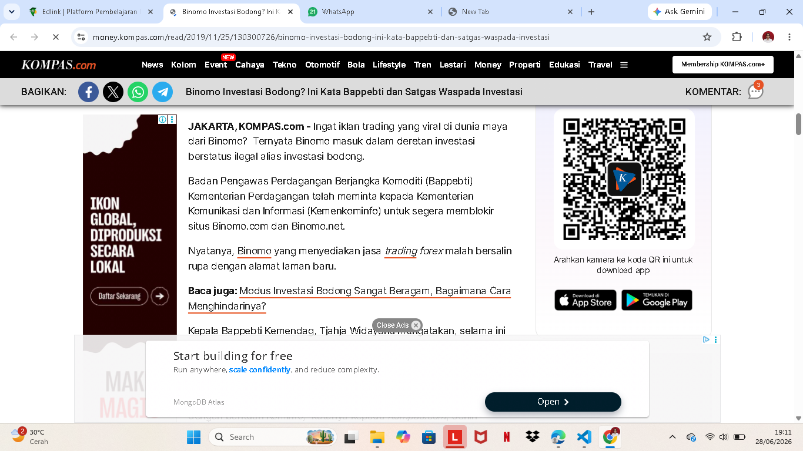

UAS Pendidikan Agama
Tugas: Pendidikan Agama | Kristen Protestan | 2026
Lembaga Keuangan Berdasarkan Nilai-Nilai Kristen Protestan dan Perbedaannya dengan Lembaga Keuangan Konvensional
Dalam pandangan Kristen Protestan, lembaga keuangan harus beroperasi dengan kejujuran, integritas, dan pelayanan bagi sesama. Konsep ini berpijak pada ajaran Alkitab yang menempatkan keuangan sebagai sarana untuk memelihara hidup, mendukung keluarga, dan memberkati orang lain.
Pendahuluan
Pertumbuhan lembaga keuangan di era modern menimbulkan tantangan bagi umat Kristen Protestan: bagaimana memastikan praktik keuangan tidak melepaskan diri dari prinsip iman. Lembaga yang menjalankan bisnis berdasarkan nilai-nilai Kristen dapat menawarkan alternatif yang lebih etis dibandingkan aktivitas konvensional yang sering mengutamakan profit semata.
Pembahasan
Lembaga keuangan yang berlandaskan nilai Kristen Protestan menempatkan manusia sebagai fokus utama, bukan sekadar angka di laporan. Prinsip-prinsip yang paling penting adalah:
- Kejujuran: Setiap transaksi harus jujur, transparan, dan bebas dari penipuan. Amsal 11:1 menegaskan bahwa timbangan yang curang adalah kekejian bagi Tuhan.
- Keadilan: Keadilan dalam layanannya harus memihak mereka yang lemah dan rentan, sesuai Matius 7:12 tentang memperlakukan orang lain sebagaimana kita ingin diperlakukan.
- Tanggung jawab: Dana nasabah dikelola sebagai amanah dari Allah, sehingga setiap keputusan harus dilakukan dengan hati nurani yang bertanggung jawab (Kolose 3:23).
- Kasih: Sifat kasih menuntun lembaga untuk tidak memanfaatkan orang lain demi keuntungan, tetapi memberi peluang dan perlindungan bagi semua pihak.
- Transparansi: Informasi harus terbuka agar tidak ada pihak yang dirugikan oleh syarat atau biaya tersembunyi.
Dalam praktiknya, lembaga keuangan Kristen Protestan sering memasukkan program bantuan sosial, pembiayaan usaha kecil tanpa bunga berlebihan, dan pelatihan keuangan bagi masyarakat kurang mampu.
Perbedaan dengan Lembaga Keuangan Konvensional
Perbandingan berikut menunjukkan perbedaan antara pendekatan berbasis nilai Kristen Protestan dan praktik keuangan konvensional:
| Dimensi | Lembaga Keuangan Berbasis Nilai Kristen Protestan | Lembaga Keuangan Konvensional |
| Tujuan | Pelayanan, keadilan, dan kebaikan masyarakat. | Keuntungan maksimal dan pertumbuhan modal. |
| Etika | Kejujuran, kasih, dan tanggung jawab adalah prioritas. | Profitabilitas sering menjadi fokus utama. |
| Transparansi | Informasi lengkap dan jujur bagi nasabah. | Risiko biaya tersembunyi dan syarat kompleks tetap ada. |
| Layanan | Memperhatikan kelompok rentan dan mengembangkan program pemberdayaan. | Lebih selektif memilih nasabah dengan profil profitabilitas tinggi. |
| Prinsip Keuangan | Mendorong etika berkelanjutan tanpa memanipulasi pihak lain. | Beroperasi dengan persaingan pasar dan strategi margin keuntungan. |
Kesimpulan
Lembaga keuangan yang berlandaskan nilai Kristen Protestan menawarkan model ekonomi yang lebih manusiawi dan beretika. Perbedaan utama dengan lembaga konvensional adalah penekanan pada pelayanan, kebaikan bersama, dan tanggung jawab sosial sebagai bagian dari iman.
Daftar Pustaka
Kasus Investasi Bodong Binomo dalam Perspektif Etika Kristen Protestan
Analisis kasus Binomo dengan pendekatan nilai Kristen Protestan
Latar Belakang Kasus
Binomo adalah platform investasi yang sempat dianggap ilegal oleh Bappebti dan Satgas Waspada Investasi karena beroperasi tanpa izin yang jelas di Indonesia. Banyak pelaku investasi yang tergiur dengan janji keuntungan cepat tetapi kemudian mengalami kesulitan menarik dana dan kerugian besar.
Ringkasan Berita
Menurut laporan Kompas, Bappebti menyatakan Binomo tidak terdaftar sebagai penyelenggara perdagangan berjangka komoditi di Indonesia. Satgas Waspada Investasi pun memasukkan Binomo dalam daftar entitas yang patut diwaspadai karena penawaran return yang tidak realistis serta risiko tinggi bagi investor.

Caption: Screenshot inventaris yang menggambarkan kasus investasi bodong Binomo dalam perspektif etika Kristen Protestan.
Analisis berdasarkan Etika Kristen Protestan
Etika Kristen Protestan menilai praktik investasi seperti Binomo sebagai pelanggaran terhadap prinsip moral karena menempatkan keuntungan di atas keadilan. Investasi bodong Binomo dapat dikaji dari nilai:
- Kejujuran: Platform menampilkan janji return tinggi yang tidak jelas dasarnya, bertentangan dengan Amsal 11:1.
- Tanggung jawab: Menyediakan investasi yang tidak terdaftar berarti mengabaikan amanah dan keselamatan investor, bertentangan dengan Kolose 3:23.
- Kasih: Praktik ini tidak menunjukkan kasih kepada korban yang kehilangan dana mereka.
- Integritas: Menjaga reputasi dan kepercayaan adalah bagian dari integritas, yang dilanggar oleh penawaran investasi tidak transparan.
- Stewardship: Mengelola dana investor dengan baik adalah amanah, bukan eksploitasi untuk keuntungan cepat.
Ayat Alkitab yang Relevan
- Matius 7:12 - "Segala sesuatu yang kamu kehendaki supaya orang perbuat kepadamu, perbuatlah demikian juga kepada mereka."
- Amsal 11:1 - "Timbangan serong adalah kekejian bagi TUHAN, tetapi batu timbangan yang tepat adalah kesukaan-Nya."
- Kolose 3:23 - "Apapun juga yang kamu lakukan, lakukanlah dengan segenap hatimu seperti untuk Tuhan dan bukan untuk manusia."
- Matius 22:39 - "Kasihilah sesamamu manusia seperti dirimu sendiri."
Opini Pribadi
Sebagai mahasiswa Kristen Protestan, saya melihat kasus Binomo sebagai pengingat untuk menerapkan nilai kejujuran dan tanggung jawab dalam memilih investasi. Investasi harus membantu membangun kehidupan, bukan merusaknya.
Penting bagi umat Kristen untuk waspada terhadap tawaran cepat kaya dan memilih instrumen yang jelas legalitasnya. Pendidikan keuangan merupakan bagian dari kasih kepada sesama karena melindungi mereka dari kerugian.
Kesimpulan
Kasus investasi bodong Binomo mengilustrasikan bagaimana bisnis yang tampak menguntungkan dapat melanggar nilai-nilai Kristen Protestan. Keadilan, kejujuran, kasih, integritas, dan stewardship harus selalu menjadi dasar dalam menilai setiap peluang investasi.